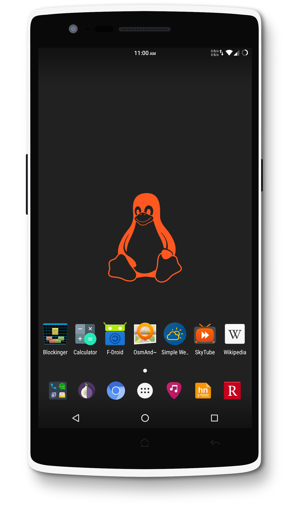

A privacy focused Android distribution
Take back (some) control of your device
Currently in pre-release
DivestOS is an unofficial soft fork of LineageOS 14.1. That means you get all the features, device compatibilty, and rapid development just as you would running the official LineageOS.
Over 500 proprietary blobs are removed during build time. Removal of these proprietary blobs increase security by reducing attack surface and increase privacy by removing untrusted code.
One of the biggest issues when it comes to Android is the Linux kernel not being patched against known exploits. We've developed an automated CVE patch checker that is able to apply fixes for over 800 vulnerabilities.
A custom hosts file created by analyzing over 250 million domains is included that blocks over 200,000 advertising and tracking servers. In addition LineageOS's built in analytics service, CMStats, is also removed.
Extirpater is the first free space eraser for Android. It helps prevent deleted files from being recovered. Perfect for migrating from an unencrypted install or before selling your device.
We created Thiea, the first ever open source realtime malware scanner for Android. Backed by the standard and trusted ClamAV signatures, it can detect over 400k malware signatures.
Fennec DOS is a browser based on Mozilla technology that is hardened against advanced fingerprinting techniques thanks to the Tor uplift project and @pyllyukko's user.js project
F-Droid is an app store that specializes in delivery of FOSS apps. For the most part all apps available through F-Droid respect your privacy and device.
microG is a FOSS reimplementation of the proprietary Google Play Services framework that many proprietary apps rely on. In the case that you need to run one of these apps, you can do so without completely exposing yourself to Google.
Silence, a SMS only fork of Signal, is substitued in place of the default AOSP app. It allows for end-to-end encrypted messages to other Silence users.